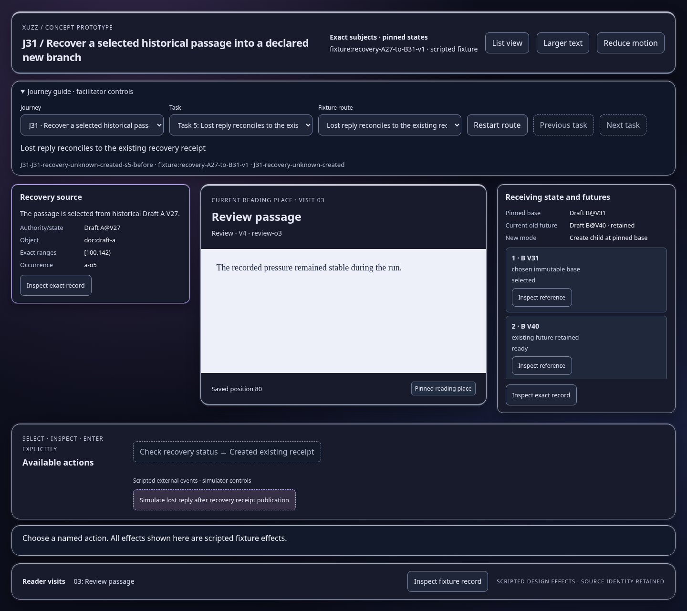
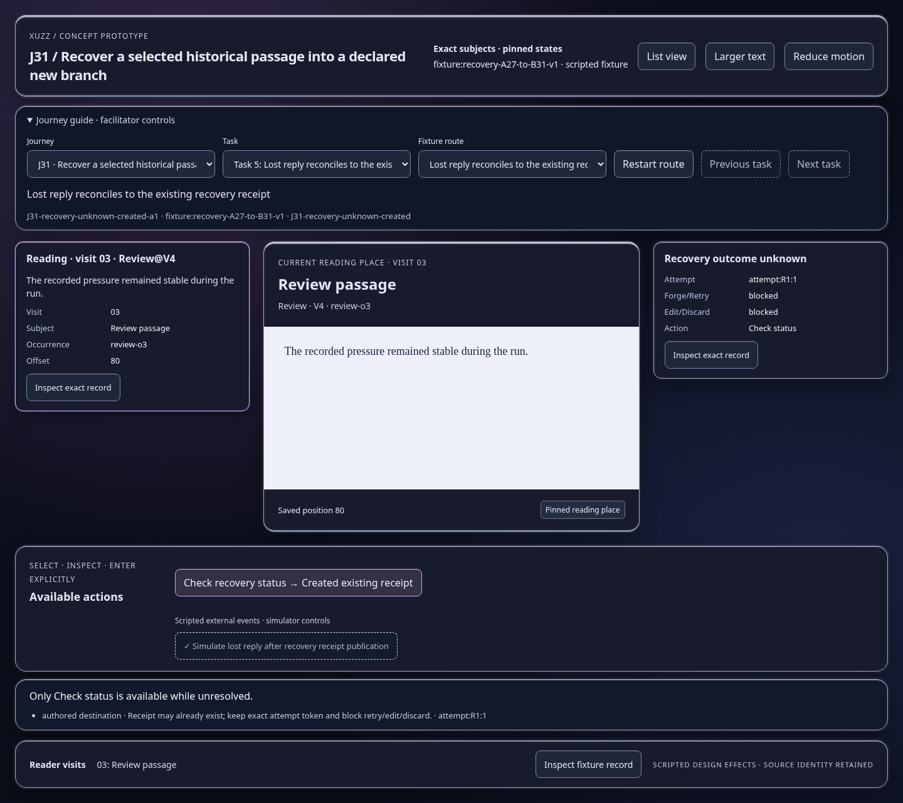
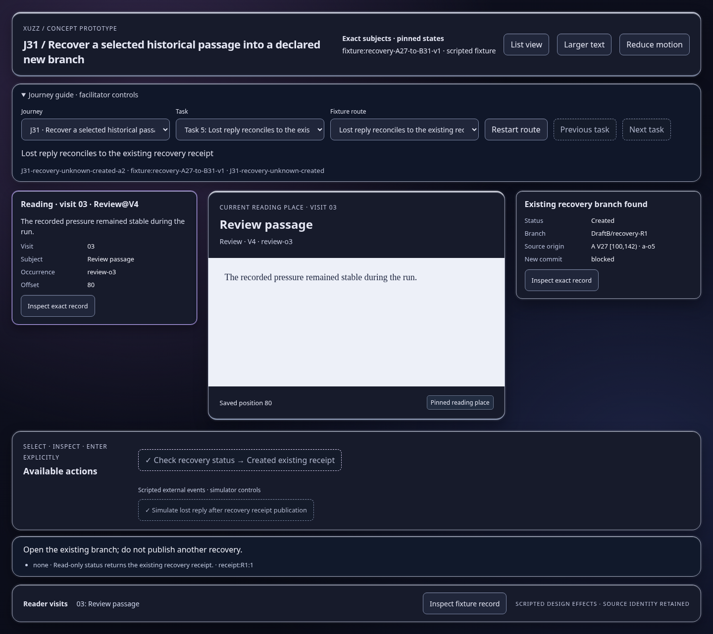

Scripted concept states; inspect the effect and identity trace. Images show actual prototype rendering.

Only Check status is available while unresolved.
Open this represented state
Open the existing branch; do not publish another recovery.
Open this represented state